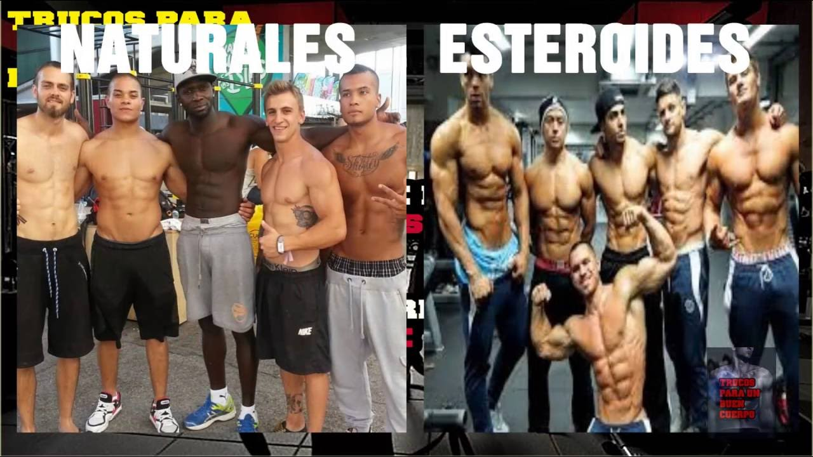
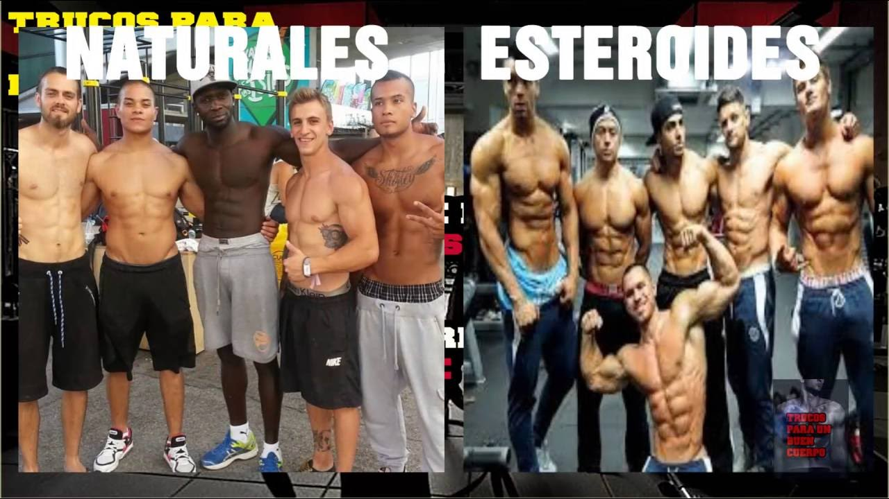

Fitness
2020.09.13 13:00
msn back to msn home lifestyle fitness powered by Microsoft News Skip To Navigation Skip To Content Skip To Footer Sign in Change language & content: Afrique francophone (français) América Latina (español) Argentina (español) Australia (English) België (Nederlands) Belgique (français) Brasil (português) Canada (English) Canada (français) Česká republika (čeština) Chile (español) Colombia (español) Danmark (Dansk) Deutschland (Deutsch) España (español) France (français) India (English) India (मराठी) India (हिंदी) India (বাংলা) India (తెలుగు) Indonesia (Bahasa Indonesia) International Edition (English) Ireland (English) Italia (italiano) Magyarország (magyar) Malaysia (English) México (español) Nederland (Nederlands) New Zealand (English) Norge (norsk, bokmål) Österreich (Deutsch) Perú (español) Philippines (English) Polska (polski) Portugal (Português) Schweiz (Deutsch) Singapore (English) South Africa (English) Suisse (français) Suomi (suomi) Sverige (svenska) Türkiye (Türkçe) United Arab Emirates (English) United Kingdom (English) United States (English) United States (español) Venezuela (español) Việt Nam (Tiếng Việt) Ελλάδα (ελληνικά) Россия (Pусский) ישראל (עברית) الإمارات العربية المتحدة (العربية) المملكة العربية السعودية (العربية) مصر (العربية) ไทย (ไทย) 한국 (한국어) 中华人民共和国 (简体中文) 台灣 (繁體中文) 日本 (日本語) 香港特别行政區 (繁體中文) Switch to Latino (Español) Feedback Help en Choose a language United States (English) - en United States (español) - es Today Coronavirus Health News Weight Loss Fitness Nutrition Mental Health & Self-Care Wellness Medical Home News Weather Coronavirus News Election 2020 Entertainment Sports Money Lifestyle Shopping Health & Fitness Food & Drink Live Coverage
Fitness
All about fitness including strength training, cardio, yoga and pilates.
SHARE SHARE TWEET SHARE EMAILFitness
AdChoices AdChoicesVideo
How to Adjust Your Ride Routine to Cooler Temps Men s Health Eddie Hall Showed Off the Workout That Revealed His Six-Pack Abs Men s Health This Guy Shared the Diet and Workout That Helped Him Lose 50 Pounds and Get Ripped Men s Health This Workout from Chris Hemsworth's Toughest Trainer Challenges You to Keep Up for 20 Minutes Men s Health AdChoicesThese $16 Mesh Slip-Ons Are a Go-To for People with Plantar Fasciitis and Arthritis
People LifestyleThis Woman's 70-Lb. Weight Loss Journey Went Viral On TikTok—And It Is Seriously Inspiring
Women s Health Health & FitnessThe HIIT myth: Why we've been sold a lie about high intensity interval training, and what you should be doing instead
INSIDER Health & FitnessCurious to Give PNF Stretching a Try? Here's What You Need to Know
PopSugar Health & Fitness6 Products That Will Help You Bounce Back From a Workout Hiatus
Men s Journal Health & FitnessThis Is the Best Diet For PCOS, According to a Dietitian
PopSugar Health & FitnessDo Your Shoulders Hurt From Running? Here’s What To Do About It
Runner’s World Health & FitnessDr. Fauci says he takes vitamin D and C supplements and that they can lessen 'your susceptibility to infection'
INSIDER Health & FitnessA luxury resort in the Maldives has a 'workation' package that comes with a desk on a secluded sand bank as well as a personal assistant
INSIDER TravelThis Is How You Actually Lose Water Weight
Thank your diet for how bloated you re feeling.
Men s Health Health & FitnessUse Physical Tokens to Count Sets
There’s something about exercise that scrambles your brain a little. I know I’m not the only one who stops being able to count accurately after about...set two. So if you have multiple sets of an exercise, or rounds of a circuit, try giving yourself some physical tokens to help count.
Lifehacker MoneyCOVID-19 Has Me Hiding Little Things From My Husband - and I'm Not Alone
PopSugar EntertainmentEva Longoria's Love-Hate Relationship with This Exercise Is So Relatable
Shape Health & FitnessPhotos
These Exercise Bikes Are Way Cheaper Than Peloton and Top Rated for At-Home Workouts
Prevention Health & FitnessThis Detergent Actually Gets the Stink Out of My Workout Gear
Self LifestyleStipe Miocic Shares His Heavyweight Champion Workout
Men s Health Health & FitnessThis Diet May Lead to More Weight Loss Than Cutting Calories, New Study Finds
Eat This, Not That! Health & FitnessSave Space In Your Home Gym With The ATIVAFIT Adjustable Dumbbells
Men s Journal Health & FitnessThe Best COVID-19 Masks for Indoor and Outdoor Workouts
Men s Journal LifestyleHere’s What Breathing in Wildfire Smoke Can Do to Your Body, According to Doctors
Prevention Health & Fitness AdChoices Feedback © 2020 Microsoft Privacy & Cookies Terms of use About our Ads Help Newsletter MSN Worldwide Disclaimer About Health MSN Blog About Us Editorial StandardsSend MSN Feedback
We appreciate your input!
How can we improve?Please give an overall site rating:
Submit Close Privacy Statement Help Help & Support- Fitness | Onnit
- Fitness - MSN
- Fitness - Men's Health
- Anytime Fitness - Training | Let's Make Healthy Happen
- Fitness Advice, Workout Tips, and More | Health.com
- Indoor Bike Trainers, GPS Bike Computers ... - Wahoo Fitness
- Exercise, Workout, and Fitness Center: Yoga, Cardio ...
- Fitness Magazine | Shape
- MyFitnessPal | MyFitnessPal.com
- My Account | Planet Fitness
- Fitness | Onnit
Providing the best in natural supplements and fitness equipment. Home of our flagship nootropic, Alpha BRAIN.
- Fitness - MSN
Fitness Blender provides free full length workout videos, workout routines, healthy recipes and more.
- Fitness - Men's Health
Fitness definition, health. See more. capability of the body of distributing inhaled oxygen to muscle tissue during increased physical effort.
- Anytime Fitness - Training | Let's Make Healthy Happen
Willful Smart Watch for Android Phones and iOS Phones Compatible iPhone Samsung, IP68 Swimming Waterproof Smartwatch Fitness Tracker Fitness Watch Heart Rate Monitor Watches for Men Women (Green-Gold)
- Fitness Advice, Workout Tips, and More | Health.com
Follow these tips to master the pose. Answer: As a bonus for reaching your workout goals, focus on small treats that aren’t food. For example, you could go to a concert, get a manicure, or buy a ...
- Indoor Bike Trainers, GPS Bike Computers ... - Wahoo Fitness
Free online calorie counter and diet plan. Lose weight by tracking your caloric intake quickly and easily. Find nutrition facts for over 2,000,000 foods.
- Exercise, Workout, and Fitness Center: Yoga, Cardio ...
Wahoo Fitness specializes in indoor bike trainers, GPS bike computers, cycling sensors & heart rate monitors designed to optimize your cycling training.
- Fitness Magazine | Shape
Get the latest expert fitness advice on healthy workouts, fitness challenges, muscle recovery, workout trends, and more.
- MyFitnessPal | MyFitnessPal.com
The 3-mile run shouldn't be a problem for these two, but the pullups and crunches are another story.
- My Account | Planet Fitness
Work out at home for free. We believe fitness should be accessible to everyone, everywhere, regardless of income or access to a gym. With hundreds of professional workouts, healthy recipes and informative articles, as well as one of the most positive communities on the web, you’ll have everything you need to reach your personal fitness goals – for free!
Providing the best in natural supplements and fitness equipment. Home of our flagship nootropic, Alpha BRAIN.
Fitness Blender provides free full length workout videos, workout routines, healthy recipes and more.
Fitness definition, health. See more. capability of the body of distributing inhaled oxygen to muscle tissue during increased physical effort.
Willful Smart Watch for Android Phones and iOS Phones Compatible iPhone Samsung, IP68 Swimming Waterproof Smartwatch Fitness Tracker Fitness Watch Heart Rate Monitor Watches for Men Women (Green-Gold)
Follow these tips to master the pose. Answer: As a bonus for reaching your workout goals, focus on small treats that aren’t food. For example, you could go to a concert, get a manicure, or buy a ...
Free online calorie counter and diet plan. Lose weight by tracking your caloric intake quickly and easily. Find nutrition facts for over 2,000,000 foods.
Wahoo Fitness specializes in indoor bike trainers, GPS bike computers, cycling sensors & heart rate monitors designed to optimize your cycling training.
Get the latest expert fitness advice on healthy workouts, fitness challenges, muscle recovery, workout trends, and more.
The 3-mile run shouldn't be a problem for these two, but the pullups and crunches are another story.
Work out at home for free. We believe fitness should be accessible to everyone, everywhere, regardless of income or access to a gym. With hundreds of professional workouts, healthy recipes and informative articles, as well as one of the most positive communities on the web, you’ll have everything you need to reach your personal fitness goals – for free!
 
